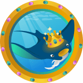
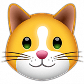
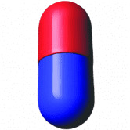
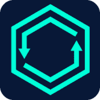

Kimochi 从金融界的“胜利之情”到日本成人视频（JAV）的压倒性感情 – Kimochi Kimochi Finance 是一个与 DeFi 应用程序完全集成的平台，为用户带来最大的利润。日文kimochi
KING FOREVER King Forever 是一个去中心化的娱乐生态系统，包括：元界 MMORPG 是币安 S 上的全尺寸实时冒险角色扮演游戏King Forever 是一个独特的 meme 代币，它正在构建加密空间中扮演 Metaverse
Kingdom of Poseidon 具有疯狂 APR 的 BSC 上的最佳 DefiPoseidon’s Kingdom是一个[旅游岛 [定时任务])，玩家有 192 小时的时间来建造和升级总共 5 个新的固定结构，这些结构的资产会带来
 KingMantaRaySwap KingMantaRaySwap 由 PancakeSwap 和 Yield Farming 分叉，以及在 BSC POLYGON AVAX Fantom 上运行的 Staking 平台。KingMantaRaySwap 由 PancakeSwap 和 Yield Farming 分叉，以及在 BSC POLYGON AVAXFantom 上运行的 Staking 平台KingManta
 Kitten.Finance Kitten.Finance 是一个完整的 DeFi 生态系统：交换、借贷、期权、保险库等等。我们也在研究我们自己的 L2 解决方案。Kitten.finance 是一个 DeFi 生态系统，拥有
Kitty Farms Kitty Farms 是 BSC 上用于单产农业的去中心化解决方案，具有额外的机制来保护用户免受风险，因此您不必为高盈利能力而付出高昂的风险。用户将通过参与 KittySwap 上的流动
KIWI Wallet KIWI 钱包使用户能够在链下和链上进行快速、免费和私密的小额支付。 KIWI PoW 代币是一个社区项目，也是首批可开采的 ERC20/918 代币之一。没有预挖或 ICO。因此，它具
Kiyomi Finance POKI 最大供应量 80,00010% 转让税：1% 燃烧4% 用于农业POKICR 质押 5% 通货紧缩农业循环：耕种、转移、烧毁、再分配可变排放：农场收到的 POKI 总数除以 360000 块 基桥
Klandestino Swap 什么是 Klandestino Protocole？ (KlandestinoSwap) Klandestino Swap 是一个去中心化的“DEX”交易所，用于交换币安链网络上推出的 BEP-20 代币。这是一个允许交易者、开发商和流动性提供
Knights of the Round Table DeFi Knights DeFi 正在为币安智能链上的 DeFi 设定新标准。 我们相信，通过社区、荣誉和诚信，我们可以改变未来其他人处理 DeFi 的方式。 我们的目标如下：我们想要什么：对重
GRB - TRON Lending 糯米饭团是一个开放的 Defi 协议，用于加密存款和借贷服务。获取最重要的 GRB - TRON Lending dApp 指标触手可及 - 分析下面的深度图表，评估 dApp 在不同时间段的活动并做出快
Goblin Finance 在这个基于 Fantom 链的 DeFi 平台上安全赚钱，2021 年最好的链！我们将创建一个安全和自动化的平台，用户可以在该平台上质押他们最喜欢的 LP 来赚取 Gobli
GoBull Swap GoBullSwap - Yield Farming 概念 通过 GoBullSwap 上的 Yield Farming，用户可以利用将他们的加密货币置于赌注中赚取高额利息。 根据 DeFi 分析和排名平台 DeFiPulse 的数据，DeFi 协议在这些
GolFinance GolFinance 是一个以 NFT 足球为主题的 DeFi 生态系统，其使命是创建一个一体化解决方案，以最大限度地提高用户收益，同时提供安全、快速和低 gas 费用的体验。 我们的目标
Gondola Finance Gondola 是 Saddle 的一个分支，但受到 Avalanche 的高吞吐量和亚秒级终结性的支持。 利用 StableSwap 算法，我们将连接 Avalanche 上的任何资产，以解决由于多个桥梁造成的碎片化流动性问题。6
Gragas Finance Gragas Finance 是一个收益农业平台，专注于在币安智能链上提供最佳的自动化复利操作。 ***突出特点： 支持 PancakeSwap 的新 LP（版本 2） 低排放率和减排 +混合燃烧机制：
GrassLand Finance $WILD 和 $YARD 功能 GrassLand Finance 是 Polygon 网络上的一种渐进式分层收益农业协议，最终旨在引入创造性功能（如燃烧金库和委托农业系统），使过去的层保持相关性，而不仅仅是用
Gratitude Farm Gratitude Farm 是一个致力于感谢我们社区的项目。 除了将被销毁的最大部分外，所有 3% 的存款费用都将用于流动性。 我们还对自动转换为 LP 代币的感恩代币征收 4% 的交易
Gravity Finance Gravity Finance 是部署在 Polygon Network 上的 DeFi 平台，目前提供以下功能： 交换交换 农场 产量优化保险库 Launchpad（代币销售） 在不久的将来，我们也期待发布： 自动化和
GRAVY GRAVY DeFi 项目是 DeFi 领域最具创新性的项目。 GRAVY 是一种在 EOS 主网上实施的高频交易 (HFT) 套利策略，用于挖掘盈利交易。为了让 GRAVY 挖掘 EOS 主网以获取套利机会，它使用 CPU 资
Invader Finance 0xBTC 入侵了 Matic 网络！！ 通过在去中心化交易所 SwapMatic.io 上提供流动性，在 Matic 网络上赚取 ALIEN 代币！ Chevron Finance 自豪地为布里斯班和更广泛的澳大利亚的人们提供基于灵活性和透明
Inverse finance Inverse.finance 是一套无需许可的去中心化金融工具，由运行在以太坊区块链上的去中心化自治组织 Inverse DAO 管理。 Inverse.finance 的主要产品是 Anchor、DOLA 和 DCA Vaults 我们是澳大利
IOT APE IOT Ape 是新 IoTeX 链上的自动做市商和收益农场。 IOTX 是一种以太坊代币，为 IoTeX 提供动力，IoTeX 是一个旨在连接物联网设备（如相机和传感器）和去中心化应用程
 Dr.Mario Finance 问题已解决： — 大资金进出，波动较大。 — 使用稳定币不断创建代币，没有任何贡献 — 代币燃烧不足 — Rugpull 关于我如何防止 Rugpull — 删除了迁移器代码（从 Pancake swap 继承）
 DRIVENswap 什么是 DRIVENswap？DRIVENswap 是一个平台，允许用户为权益或矿池做出贡献，并以被动方式赚取额外的 DRIVENx 代币。只有通过 DRIVENsecurity 审核的信誉
DSP Token DSP 是一个利润丰厚的 Staking Dapp 平台。 DSP 是从以前的质押平台背后的理念发展而来的，设计时考虑到一件事，即 STAKERS。通过拥有 DSP 代币并在我们的质押门户
DuckyDeFi Fair 为所有人推出 DeFi 收益农业，提供流动性并开始赚取新鲜鸡蛋。 388 个独特的零代在 14 小时左右下降。 每只鸭子 458 CRO。 （如果你知道为什么选择 458） 每笔


 - 强大的 DeFi 收益农业、质押、加电增益、奖励和代币效用生态系统多链。")


 套利策略，用于挖掘有利可图的交易。")